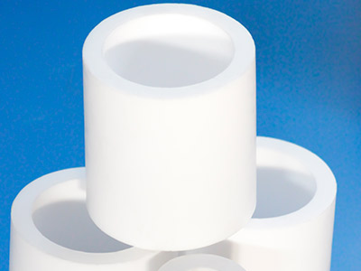
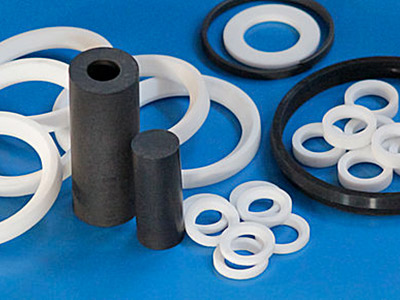

<section class="production section">
    <div class="container">
        <div class="row">
            <div class="col-md-12">
                <h1 class="section-title">Втулки из фторопласта-4 и композиций на его основе</h1>
            </div>
        </div>

        <div class="row">
            <div class="col-md-4 col-sm-6 col-xs-12">
                
            </div>
            <div class="col-md-8 col-sm-6 col-xs-12">
                <p>
                    <strong>Фторопластовые втулки</strong> производятся методом компрессионного формования с&nbsp;последующим спеканием в&nbsp;термо-шкафах при определенных режимах в&nbsp;зависимости от&nbsp;параметров втулки: наружного и&nbsp;внутреннего диаметра, высоты и&nbsp;качественного состава.
                </p>
                <p class="no-mrg">
                    <strong>Изготовление втулок</strong> также проводят из&nbsp;композиций:
                </p>
                    <ul class="list-reg">
                        <li>Ф-4К20</li>
                        <li>Ф-4К15М5</li>
                        <li>Ф-4УВ15</li>
                        <li>Ф-4С15</li>
                        <li>Ф-4Н17М3</li>
                        <li>и&nbsp;других наполненных фторопластовых материалов.</li>
                    </ul>
            </div>
        </div>
        <hr>
        <div class="row">
            <div class="col-md-8 col-sm-6 col-xs-12">
                <p class="no-mrg">
                    <strong>Фторопластовые втулки</strong> редко используются непосредственно, как готовые изделия, зато они <strong>являются идеальными заготовками для производства комплектующих деталей</strong>:
                </p>
                <ul class="list-reg">
                    <li>седел</li>
                    <li>прокладок</li>
                    <li>манжет</li>
                    <li>шайб</li>
                    <li>уплотнений</li>
                    <li>отбойников</li>
                    <li>колодок</li>
                    <li>изоляторов</li>
                    <li>колец</li>
                    <li>и&nbsp;прочих элементов механизмов и&nbsp;конструкций.</li>
                </ul>
                <p>
                    Эти детали изготавливаются методом механической обработки фторопластовых втулок на&nbsp;станках, токарных и&nbsp;фрезерных, и&nbsp;обладают всеми практически важными свойствами фторопласта и&nbsp;заготовок из&nbsp;него: химическая стойкость, электроизоляционные и&nbsp;антифрикционные показатели, уплотнительные свойства, гидрофобность.
                </p>
            </div>
            <div class="col-md-4 col-sm-6 col-xs-12">
                
            </div>
        </div>
        <hr>
        <div class="row">
            <div class="col-md-12">
                <p class="txt-conclusion">
                    ООО &laquo;СВС&raquo; гарантирует поставку качественных втулкок из&nbsp;фторопласта-4 и&nbsp;композиций на&nbsp;его основе стандартных типо-размеров, так и&nbsp;по&nbsp;индивидуальному заказу заданных параметров.
                </p>
            </div>
        </div>
    </div>
</section>

